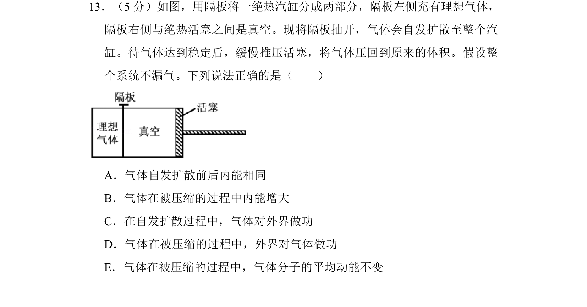
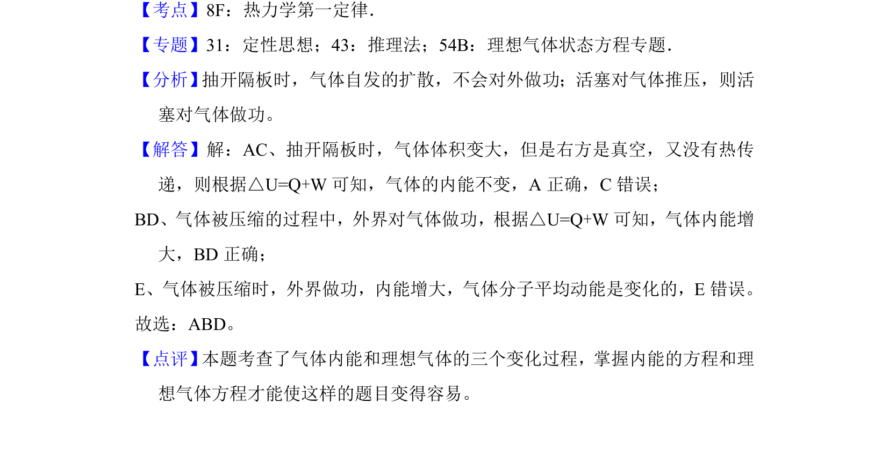

考点：热学 气体状态变化 热力学第一定律 分子动理论

理想气体自由膨胀后再被等温压缩回原体积，判断各阶段内能、功和分子平均动能的变化。

📄 原 PDF 第 17 页：
素材/真题/吉林/2008-2024·（吉林）物理高考真题/2017年高考物理试卷（新课标Ⅱ）（解析卷）.pdf
13．（5分）如图，用隔板将一绝热汽缸分成两部分，隔板左侧充有理想气体， 隔板右侧与绝热活塞之间是真空。现将隔板抽开，气体会自发扩散至整个汽 缸。待气体达到稳定后，缓慢推压活塞，将气体压回到原来的体积。假设整 个系统不漏气。下列说法正确的是（ ） A．气体自发扩散前后内能相同 B．气体在被压缩的过程中内能增大 C．在自发扩散过程中，气体对外界做功 D．气体在被压缩的过程中，外界对气体做功 E．气体在被压缩的过程中，气体分子的平均动能不变
【考点】8F：热力学第一定律．菁优网版权所有 【专题】31：定性思想；43：推理法；54B：理想气体状态方程专题． 【分析】 抽开隔板时，气体自发的扩散，不会对外做功；活塞对气体推压，则活 塞对气体做功。 【解答】解：AC、抽开隔板时，气体体积变大，但是右方是真空，又没有热传 递，则根据△U=Q+W可知，气体的内能不变，A正确，C错误； BD、气体被压缩的过程中，外界对气体做功，根据△U=Q+W可知，气体内能增 大，BD正确； E、气体被压缩时，外界做功，内能增大，气体分子平均动能是变化的，E错误。 故选：ABD。 【点评】 本题考查了气体内能和理想气体的三个变化过程，掌握内能的方程和理 想气体方程才能使这样的题目变得容易。